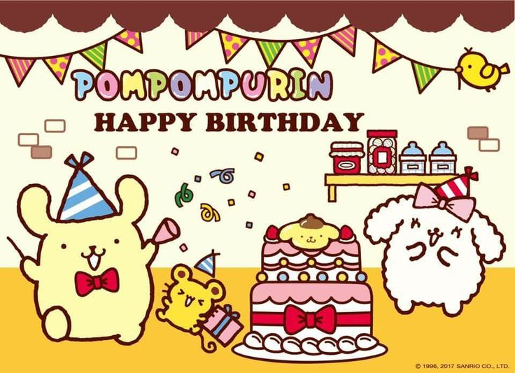
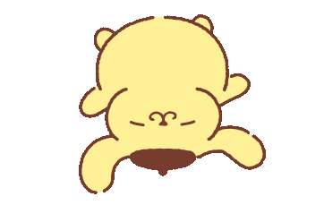

Feliz cumpleaños amor. Al fin tuve el privilegio de celebrar este día tan especial contigo, celebrando tu vida y demostrándote cuánto te amo. Agradezco a Dios por haberte traído a mi vida y por dejarme compartir todos tus días. Eres increíble, muy especial y perfecto. Me encanta verte crecer y aprender cosas nuevas sobre ti cada día.
Espero que la pases muy lindo hoy y que te gusten los regalos de mi parte. No es mucho, pero es de corazón.
Te amo con todo lo que soy y amo todas tus versiones. No tuve la suerte de conocerte antes, pero incluso así amo cada pequeño detalle de ti y sé que te amaría sin importar cómo hubieras sido antes, cómo seas en el futuro y, sobre todo, cómo eres ahora y te amo en todos los universos.
Mi pequeño pedacito de cielo, el pollito de mis papás, mi chiquito.
Me encanta escucharte cuando me cuentas historias de tu infancia y me compartes tus recuerdos y sueños. Me gusta ver tus fotos de bebé e imaginarme una familia contigo, y que nuestros hijos se parezcan a ti, con tus ojitos lindos y tu forma tan linda de ser.
A veces cuando veo tus fotos de bebé y pienso en lo mucho que me habría gustado conocerte desde entonces, haber crecido a tu lado o al menos cerca de ti, ir a la misma escuela y haber sido amigos desde pequeños para no haber tenido que pasar mi vida tan sola. Pero me tocó nacer a 5 mil kilómetros de distancia.
Me hace muy feliz pensar que ahora soy yo quien puede cuidar al bebé de esas fotos. Prometo cuidar siempre de ti, aunque ya hayas crecido tanto. Te vere crecer cada dia y celebrare todos tus logros contigo, siempre estare orgullosa de ti y de todo lo que logres. Amo a la persona que eres hoy, pero también al niño que fuiste.
Amo que seas tan protector conmigo y tan cariñoso, sensible y empático; que estar contigo se sienta tan tranquilo y familiar, y que siempre puedas darme esa seguridad. Sé que no necesito nada más si te tengo a ti, y tú siempre me tendrás a mí. Espero poder hacer mejor tu vida y alegrártela como tú alegras la mía.


En toda mi vida nunca había conocido a nadie que me complementara como lo haces tú, y genuinamente llego a pensar que estás hecho para mí, siento que eres mi alma gemela y que estábamos destinados. Yo sé que no podemos saber qué nos depara el futuro, pero espero poder seguir celebrando tu cumpleaños contigo el resto de mi vida y que pronto pueda ser en persona. Anhelo poder besarte y abrazarte.
Eres el mejor de todo el mundo y me enamoras más cada día. No cambiaría nada de ti. Me encanta tu carita y tu forma de ser. Estoy enamorada incluso de las cosas que tú consideras defectos, de las lágrimas que hemos derramado, de nuestra toxicidad que nos hace lo que somos, de nuestras risas, nuestros recuerdos, nuestras alegrías, nuestro pasado y nuestro futuro. Eres lo mejor de mi vida, mi felicidad, mi gatito.
Yo te admiro demasiado. Admiro y me siento muy atraída por ti porque nunca dudas de que puedes hacer algo y porque eres bueno de forma natural en los juegos y en la mayoría de las cosas que haces. También admiro que siempre sepas qué decir en todas las situaciones y que casi nunca haya momentos incómodos contigo porque siempre sabes cómo hacerme reír o hacerme sentir mejor. Tienes un corazón enorme y te voy a cuidar siempre que me lo permitas.
Las palabras nunca alcanzarán para expresar lo que siento, pero espero que nunca dudes del amor que siento por ti. Yo siempre daré lo mejor de mí para que lo nuestro funcione porque quiero estar contigo para siempre.
Eres muy gracioso y eso también me encanta. Eres tan pequeño que siempre quieres mimir y eres tan mío. Siempre serás solo mío. Nunca me había sentido tan atraída a alguien como me siento contigo desde el primer día. Me cambiaste toda la vida, amor, y ya no me imagino un día sin ti. Ya no sé cómo es vivir sin ti. El amor que siento por ti me consume. Eres una gran parte de mí; ya no soy yo sin ti. Mi dúo en todo, mi Spiderman, mi Justin, mi Jesusito, mi chinito, mi soulmate, mi señor papi, capitán Perú.
Si tuviese la suerte de estar cerca de ti en la vida real, te habría hecho postrecitos en forma de corazón y te habría llevado a comer algo rico para celebrar, pero no se puede, pipipi.


Felices 25, mi niño. Que este año esté lleno de bendiciones y cosas buenas y, sobre todo, de mucho amor, mi pe causita que me robó el corazón.
También es nuestro aniversario de 9 meses de novios, así que es una doble celebración.
— Por siempre tuya, tu Dani, tu Effy, tu muñequita, 03 💗
Te amo mucho mi pulguita >_<
picale o eres kbrito
